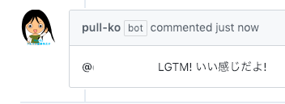
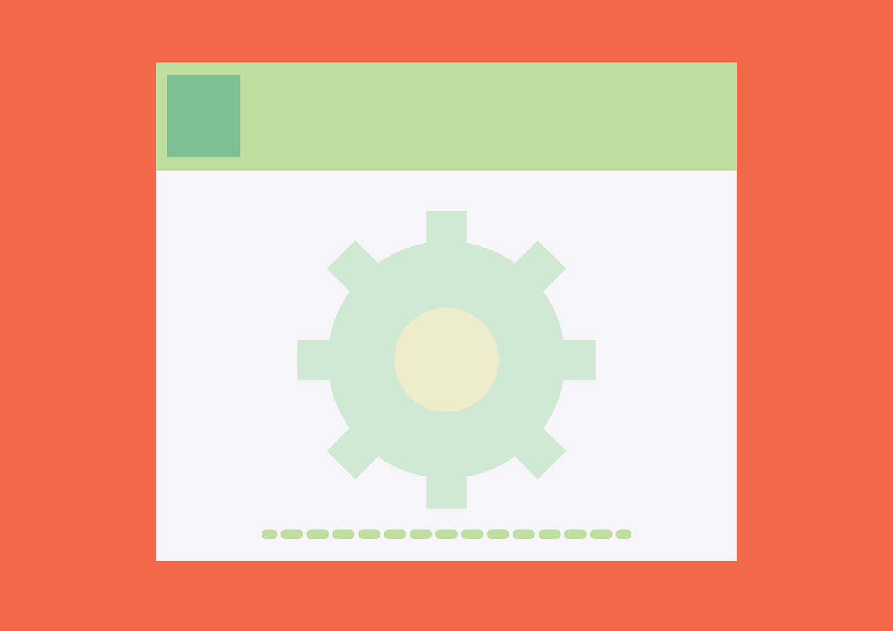

開発に彩りを
個人開発に彩りを与えてくれます。孤独に戦うあなたの強い味方です。

褒めてくれる
Pull Requestに対するコメントと言えば、上司の辛辣な批判ばかりではないでしょうか?
Pull-Koはとても優しい子です。あなたの傷つくことは一切言わず励ましてくれます。

余計なことは言わない
あなたのPull Requestに対して応援してくれます。
Issueが溜まってるとか、あなたが気にしていることは言いません。
Pull-Koとは
個人開発の際にモチベーションが出ないこと、ありませんか?
あるいは、チーム開発のとき、Pull Requestで
猛攻撃を食らうこと、
ありませんか?
Pull-Koは、どんなPull Requestに対してもあなたを褒めてくれます。
とりあえずPull-Requestを出してあげれば、あなたに秒でリプライしてくれます。
特徴
Pull Requestが投げられた直後、Pull Requestが閉じられた直後に話しかけてくれます。
あなたの傷つくようなことは一切言いません。あなたの苦労を精一杯労ってくれます。

